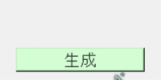

デストロイの方法
アプリのUIを消すには destroy() を用いる。例えばボタンを消すには下のようにする。
but = t.Button()
but.destroy()
UIを生成する関数とそれを破壊する関数を用意すれば、UIの生成と破壊が自由に行える。
#UIの生成を行う関数
#butをグローバル変数とし、全ての関数で共通して使えるようにしている
def func_make():
global but
but = t.Button()
but.pack()
#UIの破壊を行う関数
def func_destroy():
but.destroy()
よくあるエラー
デストロイ前後でのエラー
関数を用いた際のエラー
一度デストロイしたUIはその変数ごと消えるので、そのUIに対して何か操作を行ったり再びデストロイしたりするとエラーを起こす。
例えば下のようなコードは実行できない。
but = t.Button()
but.pack()
but.destroy()
but.pack()
一度butをデストロイするとbutは変数ごと消えるので、pack()で再び表示させようとしてもエラーとなる。
上の例を実行できるように修正すると下の通りだ。
but = t.Button()
but.pack()
but.destroy()
but = t.Button()
but.pack()
続いて、関数を用いてデストロイしたときによく起こるエラーについてだ。
例えば下のように関数を定義したとする。
def func_make():
global but
but = t.Button()
but.pack()
def func_destroy():
but.destroy()
これはfunc_make()にてボタンの生成を行い、func_destroy()にでボタンの破壊を行うものだ。
交互に呼び出されれば問題はないが、func_make()が二度連続して呼び出されるとボタンが重複して作られてしまうし、func_destroy()が二度連続して呼び出されるとbutは既に破壊されているのでエラーを起こす。
この二つを解決する方法の一例は下の通りだ。
boo = True
def func_make():
global but, boo
if( boo ):
but = t.Button()
but.pack()
boo = False
def func_destroy():
try:
but.destroy()
boo = True
except:
pass
ここで、ボタンを押すたびにラベルの生成と破壊を繰り返すプログラムを記載する。
実行例
import tkinter as t
boo = True
#ボタンが押されると呼び出される関数
def func( event ):
global boo
if( boo ):
func_make()
boo = False
else:
func_destroy()
boo = True
#ラベルを生成する関数
def func_make():
global lab
lab = t.Label( text = u'ラベル', font = ('Arail',20) )
lab.pack( pady = 10 )
trigger[ 'text' ] = '破壊'
trigger[ 'background' ] = '#f8d0d0'
#ラベルを破壊する関数
def func_destroy():
try:
lab.destroy()
except:
pass
trigger[ 'text' ] = '生成'
trigger[ 'background' ] = '#d0f8d0'
app = t.Tk()
app.title( 'テスト' )
app.geometry( '200x100' )
trigger = t.Button( text = u'生成', font = ('Arial',15), background = '#d0f8d0' )
trigger.place( x = 20, y = 60, width = 160, height = 30 )
trigger.bind( '<Button-1>', func )
app.mainloop()
実行結果（gif画像）
